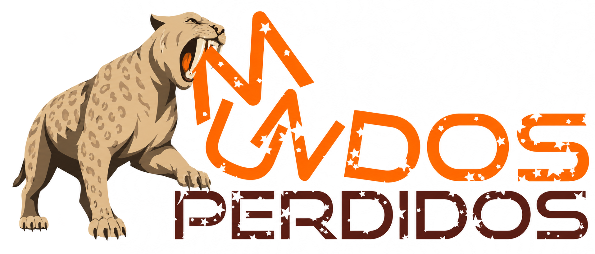
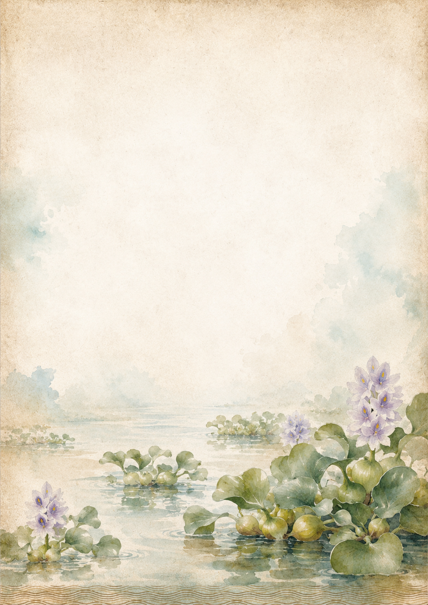
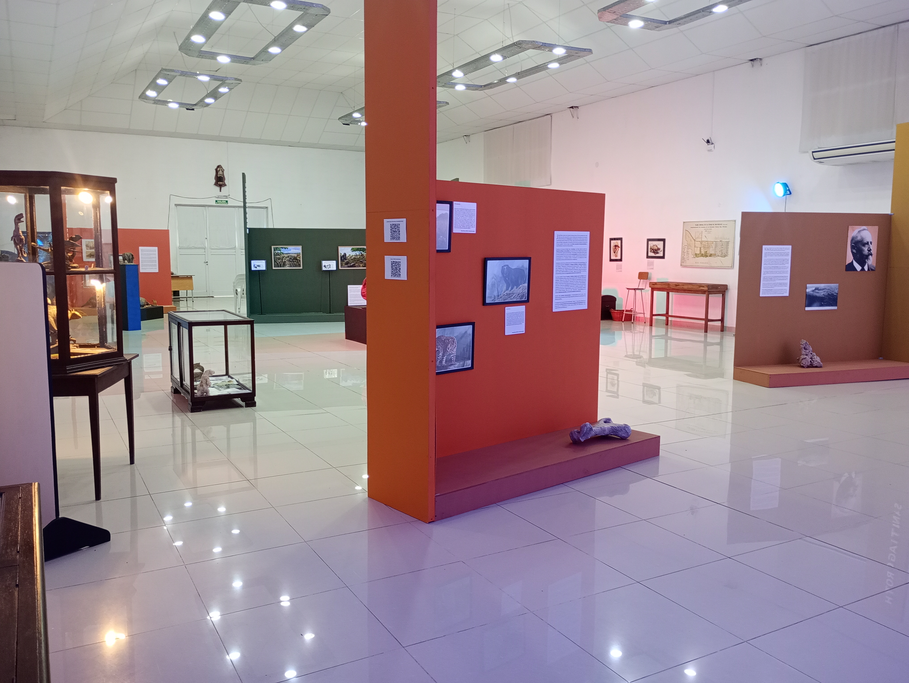
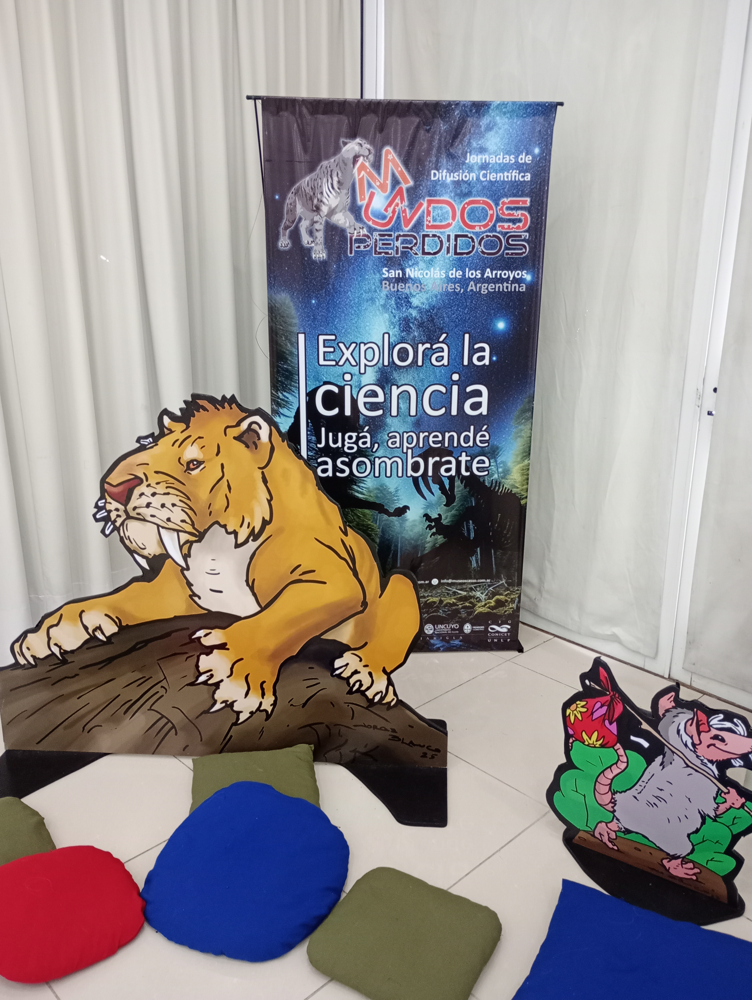

Río conocido
Ciudad, barrancas, islas, pesca, navegación y memoria territorial.
Jornadas de Difusión Científica

Una nueva edición dedicada al río, sus ambientes, su historia natural, sus relatos, su patrimonio y las formas de encuentro entre ciencia, educación, arte y comunidad.
Reservas y entradas
Un anticipo para familias, infancias, escuelas y público general.
Mundos Perdidos vuelve con una edición centrada en el Río Paraná, con ciencia, juego, asombro y encuentro.

Ejes 2026
Ciudad, barrancas, islas, pesca, navegación y memoria territorial.
Sedimentos, biodiversidad, fósiles, agua, procesos naturales y tiempo profundo.
Relatos, criaturas, imaginarios y memorias populares vinculadas al territorio.
Conservación, educación ambiental, participación comunitaria y cuidado de los ambientes del Paraná.
Experiencia familiar
Las jornadas reúnen propuestas de divulgación, objetos, relatos, imágenes, recorridos y actividades pensadas para acercar el museo a públicos diversos.
Anticipo visual
Un vistazo a la sala, las ambientaciones y las experiencias del evento pasado en el Museo Scasso.



Lugar
Don Bosco 580, San Nicolás de los Arroyos, Provincia de Buenos Aires.
Próximamente
La agenda completa se publicará en este sitio.
Consultas info@museoscasso.com.ar